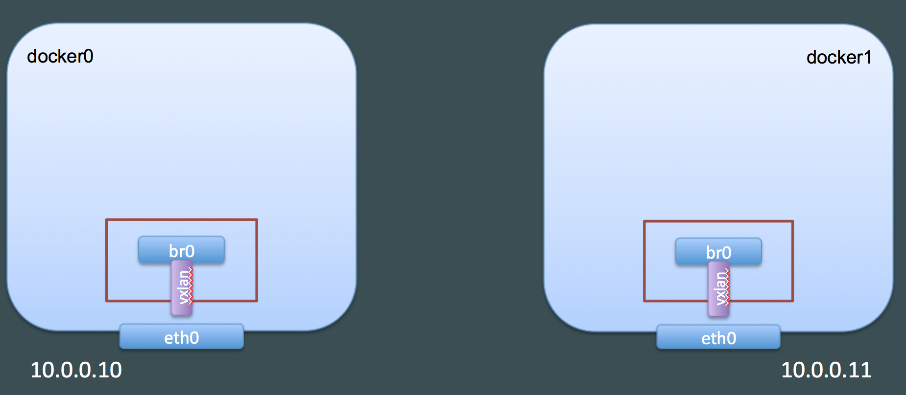
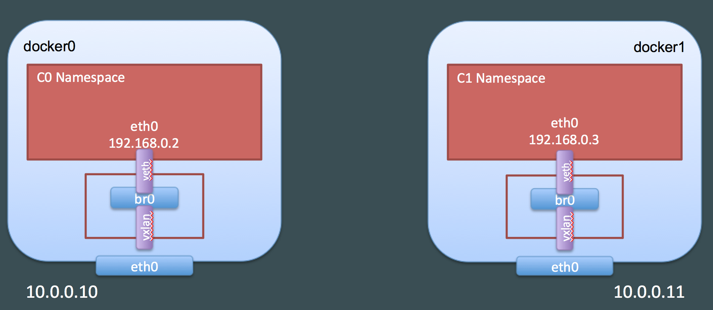
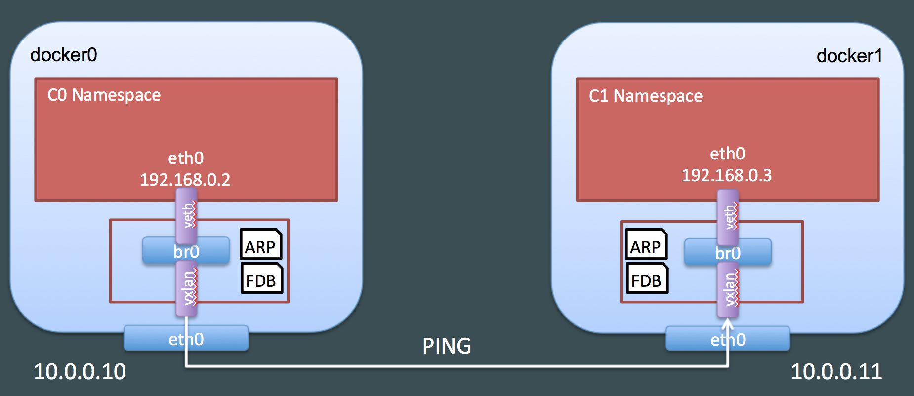
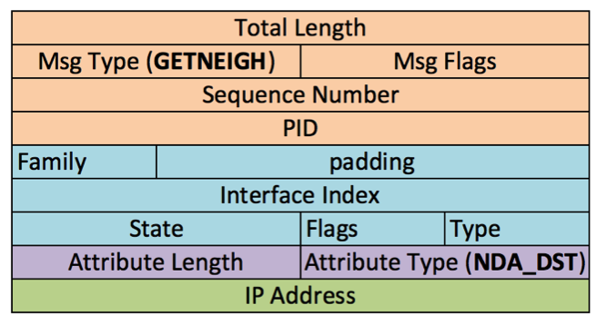
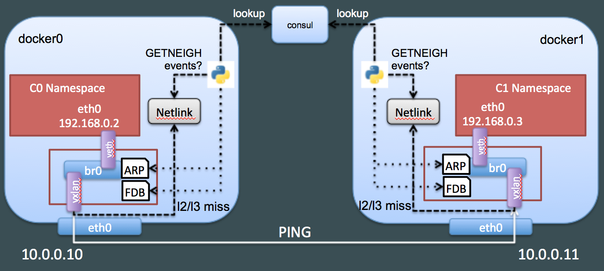

source: # Introduction In part 1 of this blog post we have seen how Docker creates a dedicated namespace for the overlay and connect the containers to this namespace. In part 2 we have looked in details at how Docker uses VXLAN to tunnel traffic between the hosts in the overlay. In this third post, we will see how we can create our own overlay with standard Linux commands.
Manual overlay creation
If you have tried the commands from the first two posts, you need to clean-up your Docker hosts by removing all our containers and the overlay network: 1
2
3docker0:~$ docker rm -f $(docker ps -aq)
docker0:~$ docker network rm demonet
docker1:~$ docker rm -f $(docker ps -aq)1
sudo ip netns add overns
1
2
3docker0:~$ sudo ip netns exec overns ip link add dev br0 type bridge
docker0:~$ sudo ip netns exec overns ip addr add dev br0 192.168.0.1/24
docker0:~$ sudo ip netns exec overns ip link set br0 up
The next step is to create a VXLAN interface and attach it to the bridge: 1
2
3
4docker0:~$ sudo ip link add dev vxlan1 type vxlan id 42 proxy learning dstport 4789
docker0:~$ sudo ip link set vxlan1 netns overns
docker0:~$ sudo ip netns exec overns ip link set vxlan1 master br0
docker0:~$ sudo ip netns exec overns ip link set vxlan1 up
The most important command so far is the creation of the VxLAN interface. We configured it to use VxLAN id 42 and to tunnel traffic on the standard VxLAN port. The proxy option allows the vxlan interface to answer ARP queries (we have seen it in part 2). We will discuss the learning option later in this post. Notice that we did not create the VxLAN interface inside the overnsnamespace but on the host and then moved it to overns namespace. This is necessary so the VxLAN interface can keep a link with our main host interface and send traffic over the network. If we had created the interface inside the overns namespace (like we did for br0) we would not have been able to send traffic outside the overns namespace.
Once we have run these commands on both docker0 and docker1, here is what we have: VXLAN interface and bridge in an overlay namespace
Now we will create containers and connect them to our bridge. Let’s start with docker0. First, we create a container: 1
docker0:~$ docker run -d --net=none --name=demo debian sleep 3600
We will need the path of the network namespace for this container. We can find it by inspecting the container. 1
docker0:~$ ctn_ns_path=$(docker inspect --format="{{ .NetworkSettings.SandboxKey}}" demo)
Our container has no network connectivity because of the --net=none option. We now create a veth device and move one of its endpoints (veth1) to our overlay network namespace (i.e. overns), attach it to the bridge and bring it up.
1 | docker0:~$ sudo ip link add dev veth1 mtu 1450 type veth peer name veth2 mtu 1450 |
The first command uses an MTU of 1450 which is necessary due to the overhead added by the VxLAN header.
The last step is to configure veth2: send it to our container network namespace and configure it with a MAC address (02:42:c0:a8:00:02) and an IP address (192.168.0.2): 1
2
3
4
5
6
7
8
9docker0:~$ ctn_ns=${ctn_ns_path##*/}
docker0:~$ sudo ln -sf $ctn_ns_path /var/run/netns/$ctn_ns
docker0:~$ sudo ip link set dev veth2 netns $ctn_ns
docker0:~$ sudo ip netns exec $ctn_ns ip link set dev veth2 name eth0 address 02:42:c0:a8:00:02
docker0:~$ sudo ip netns exec $ctn_ns ip addr add dev eth0 192.168.0.2/24
docker0:~$ sudo ip netns exec $ctn_ns ip link set dev eth0 up
docker0:~$ sudo rm /var/run/netns/$ctn_ns
The symbolic link in /var/run/netns is required so we can use the native ip netns commands (to move the interface to the container network namespace). We used the same addressing schem as Docker: the last 4 bytes of the MAC address match the IP address of the container and the second one is the VxLAN id.
We have to do the same on docker1 with different MAC and IP addresses (02:42:c0:a8:00:03 and 192.168.0.3). If you use the terraform stack from the github repository, there is a helper shell script to attach the container to the overlay. We can use it on docker1: 1
2docker1:~$ docker run -d --net=none --name=demo debian sleep 3600
docker1:~$ ./attach-ctn.sh demo 3
The first parameter is the name of the container to attach and the second one is the final digit of the MAC/IP addresses. Here is the setup we have gotten: Connecting containers to our overlay
Now that our containers are configured, we can test connectivity: 1
2
3docker0:~$ docker exec -it demo ping 192.168.0.3
PING 192.168.0.3 (192.168.0.3): 56 data bytes
92 bytes from 192.168.0.2: Destination Host Unreachable
We are not able to ping yet. Let’s try to understand why by looking at the ARP entries in the container and in the overlay namespace: 1
2docker0:~$ docker exec demo ip neighbor show
docker0:~$ sudo ip netns exec overns ip neighbor show
Both commands do not return any result: they do not know what is the MAC address associated with IP 192.168.0.3. We can verify that our command is generating an ARP query by running tcpdump in the overlay namespace: 1
2docker0:~$ sudo ip netns exec overns tcpdump -i br0
docker0:~$ tcpdump: verbose output suppressed, use -v or -vv for full protocol decode
If we rerun the ping command from another terminal, here is the tcpdump output we get: 1
217:15:27.074500 ARP, Request who-has 192.168.0.3 tell 192.168.0.2, length 28
17:15:28.071265 ARP, Request who-has 192.168.0.3 tell 192.168.0.2, length 28
The ARP query is broadcasted and received by our overlay namespace but does not receive any answer. We have seen in part 2 that the Docker daemon populates the ARP and FDB tables and makes use of the proxy option of the VxLAN interface to answer these queries. We configured our interface with this option so we can do the same by simply populating the ARP and FDB entries in the overlay namespace: 1
2docker0:~$ sudo ip netns exec overns ip neighbor add 192.168.0.3 lladdr 02:42:c0:a8:00:03 dev vxlan1
docker0:~$ sudo ip netns exec overns bridge fdb add 02:42:c0:a8:00:03 dev vxlan1 self dst 10.0.0.11 vni 42 port 4789
The first command creates the ARP entry for 192.168.0.3 and the second one configures the forwarding table by telling it the MAC address is accessible using the VxLAN interface, with VxLAN id 42 and on host 10.0.0.11.
Do we have connectivity? 1
2
3
4docker0:~$ docker exec -it demo ping 192.168.0.3
PING 192.168.0.3 (192.168.0.3): 56 data bytes
^C--- 192.168.0.3 ping statistics ---
3 packets transmitted, 0 packets received, 100% packet loss
No yet, which makes sense because we have not configured docker1: the ICMP request is received by the container on docker1 but it does not know how to answer. We can verify this on docker1: 1
2
3
4
5
6
7
8
9
10
11docker1:~$ sudo ip netns exec overns ip neighbor show
docker1:~$ sudo ip netns exec overns bridge fdb show
0e:70:32:15:1d:01 dev vxlan1 vlan 0 master br0 permanent
02:42:c0:a8:00:03 dev veth1 vlan 0 master br0
ca:9c:c1:c7:16:f2 dev veth1 vlan 0 master br0 permanent
02:42:c0:a8:00:02 dev vxlan1 vlan 0 master br0
02:42:c0:a8:00:02 dev vxlan1 dst 10.0.0.10 self
33:33:00:00:00:01 dev veth1 self permanent
01:00:5e:00:00:01 dev veth1 self permanent
33:33:ff:c7:16:f2 dev veth1 self permanent
The first command shows, as expected, that we do not have any ARP information about 192.168.0.2. The output of the second command is more surprising because we can see the entry in the forwarding database for our container on docker0. What happened is the following: when the ICMP request reached the interface, the entry was “learned” and added to the database. This behavior is made possible by the learning option of the VxLAN interface. Let’s add the ARP information on docker1 and verify that we can now ping: 1
2
3
4
5
6docker1:~$ sudo ip netns exec overns ip neighbor add 192.168.0.2 lladdr 02:42:c0:a8:00:02 dev vxlan1
docker0:~$ docker exec -it demo ping 192.168.0.3
PING 192.168.0.3 (192.168.0.3): 56 data bytes
64 bytes from 192.168.0.3: icmp_seq=0 ttl=64 time=1.737 ms
64 bytes from 192.168.0.3: icmp_seq=1 ttl=64 time=0.494 ms
We have successfuly built an overlay with standard Linux commands: Overview of our manual overlay
Dynamic container discovery
We have just created an overlay from scratch. However, we need to manually create ARP and FDB entries for containers to talk to each other. We will now look at how this discovery process can be automated.
Let us first clean up our setup to start from scratch: 1
2
3
4docker0:~$ docker rm -f $(docker ps -aq)
docker0:~$ sudo ip netns delete overns
docker1:~$ docker rm -f $(docker ps -aq)
docker1:~$ sudo ip netns delete overns
Catching network events: NETLINK
Netlink is used to transfer information between the kernel and user-space processes. iproute2(refer to this tutorial for more details), which we used earlier to configure interfaces, relies on Netlink to get/send configuration information to the kernel. It consists of multiple protocols ''families'' to communicate with different kernel components. The most common protocol is NETLINK_ROUTE which is the interface for routing and link configuration.
For each protocol, Netlink messages are organized by groups, for example for NETLINK_ROUTE you have:
- RTMGRP_LINK: link related messages
- RTMGRP_NEIGH: neighbor related messages
- many others
For each group, you then have multiple notifications, for example:
- RTMGRP_LINK:
- RTM_NEWLINK: A link was created
- RTM_DELLINK: A link was deleted
- RTMGRP_NEIGH:
- RTM_NEWNEIGH: A neighbor was added
- RTM_DELNEIGH: A neighbor was deleted
- RTM_GETNEIGH: The kernel is looking for a neighbor
I described the messages received in userspace when the kernel is sending notifications for these events, but similar messages can be sent to the kernel to configure links or neighbors.
iproute2 allows us to listen to Netlink events using the monitor subcommand. If we want to monitor for link information for instance: 1
docker0:~$ ip monitor link
In another terminal on docker0, we can create a link and then delete it: 1
2docker0:~$ sudo ip link add dev veth1 type veth peer name veth2
docker0:~$ sudo ip link del veth1
On the first terminal we can see some output. When we created the interfaces: 1
2
3
432: veth2: <BROADCAST,MULTICAST> mtu 1500 qdisc noop state DOWN group default
link/ether b6:95:d6:b4:21:e9 brd ff:ff:ff:ff:ff:ff
33: veth1: <BROADCAST,MULTICAST> mtu 1500 qdisc noop state DOWN group default
link/ether a6:e0:7a:da:a9:ea brd ff:ff:ff:ff:ff:ff
When we removed them: 1
2
3
4Deleted 33: veth1: <BROADCAST,MULTICAST> mtu 1500 qdisc noop state DOWN group default
link/ether a6:e0:7a:da:a9:ea brd ff:ff:ff:ff:ff:ff
Deleted 32: veth2: <BROADCAST,MULTICAST> mtu 1500 qdisc noop state DOWN group default
link/ether b6:95:d6:b4:21:e9 brd ff:ff:ff:ff:ff:ff1
docker0:~$ ip monitor route
1
2docker0:~$ sudo ip route add 8.8.8.8 via 10.0.0.1
docker0:~$ sudo ip route del 8.8.8.8 via 10.0.0.11
28.8.8.8 via 10.0.0.1 dev eth0
Deleted 8.8.8.8 via 10.0.0.1 dev eth0
In our case we are interested in neighbor events, in particular for RTM_GETNEIGH which are generated when the kernel does not have neighbor information and sends this notification to userspace so an application can create it. By default, this event is not sent to userspace but we can enable it and monitor neighbor notifications: 1
2docker0:~$ echo 1 | sudo tee -a /proc/sys/net/ipv4/neigh/eth0/app_solicit
docker0:~$ ip monitor neighl2miss and l3miss options of our VxLAN interface will generate the RTM_GETNEIGH events.
In a second terminal, we can now trigger the generation of the GETNEIGH event: 1
docker0:~$ ping 10.0.0.100
1
210.0.0.100 dev eth0 FAILED
miss 10.0.0.100 dev eth0 INCOMPLETE1
2
3
4docker0:~$ ./create-overlay.sh
docker0:~$ docker run -d --net=none --name=demo debian sleep 3600
docker0:~$ ./attach-ctn.sh demo 2
docker0:~$ docker exec demo ip monitor neigh
create-overlay creates an overlay called overns using the commands presented earlier: 1
2
3
4
5
6
7
8
9
10
11
12
13#!/bin/bash
sudo ip netns delete overns 2> /dev/null && echo "Deleting existing overlay"
sudo ip netns add overns
sudo ip netns exec overns ip link add dev br0 type bridge
sudo ip netns exec overns ip addr add dev br0 192.168.0.1/24
sudo ip link add dev vxlan1 type vxlan id 42 proxy learning l2miss l3miss dstport 4789
sudo ip link set vxlan1 netns overns
sudo ip netns exec overns ip link set vxlan1 master br0
sudo ip netns exec overns ip link set vxlan1 up
sudo ip netns exec overns ip link set br0 up
attach-ctn attaches a container to the overlay. The first parameter is the name of the container and the second one the last byte of its IP address: 1
2
3
4
5
6
7
8
9
10
11
12
13
14
15
16
17
18
19
20
21
22
23
24
25
26
27#!/bin/bash
ctn=${1:-demo}
ip=${2:-2}
ctn_ns_path=$(docker inspect --format="{{ .NetworkSettings.SandboxKey}}" $ctn)
ctn_ns=${ctn_ns_path##*/}
# create veth interfaces
sudo ip link add dev veth1 mtu 1450 type veth peer name veth2 mtu 1450
# attach first peer to the bridge in our overlay namespace
sudo ip link set dev veth1 netns overns
sudo ip netns exec overns ip link set veth1 master br0
sudo ip netns exec overns ip link set veth1 up
# crate symlink to be able to use ip netns commands
sudo ln -sf $ctn_ns_path /var/run/netns/$ctn_ns
sudo ip link set dev veth2 netns $ctn_ns
# move second peer tp container network namespace and configure it
sudo ip netns exec $ctn_ns ip link set dev veth2 name eth0 address 02:42:c0:a8:00:0${ip}
sudo ip netns exec $ctn_ns ip addr add dev eth0 192.168.0.${ip}/24
sudo ip netns exec $ctn_ns ip link set dev eth0 up
# Clean up symlink
sudo rm /var/run/netns/$ip monitor in the container: 1
docker0:~$ docker exec demo ip monitor neigh
1
docker0:~$ docker exec demo ping 192.168.0.3
1
192.168.0.3 dev eth0 FAILED
1
2docker0:~$ sudo ip netns exec overns ip monitor neigh
miss 192.168.0.3 dev vxlan1 STALE
This event is slightly different because it is generated by the vxlan interface (because we created the interface with the l2miss and l3miss options). Let’s add the neighbor entry to the overlay namespace: 1
docker0:~$ sudo ip netns exec overns ip neighbor add 192.168.0.3 lladdr 02:42:c0:a8:00:03 dev vxlan1 nud permanent
If we run the ip monitor neigh command and try to ping from the other terminal, here is what we get: 1
2docker0:~$ sudo ip netns exec overns ip monitor neigh
miss dev vxlan1 lladdr 02:42:c0:a8:00:03 STALE
Now that we have the ARP information, we are getting an l2miss because we do not know where the MAC address is located in the overlay. Let’s add this information: 1
docker0:~$ sudo ip netns exec overns bridge fdb add 02:42:c0:a8:00:03 dev vxlan1 self dst 10.0.0.11 vni 42 port 4789
If we run the ip monitor neigh command again and try to ping we will not see neighbor events anymore.
The ip monitor command is very useful to see what is happening but in our case we want to catch these events to populate L2 and L3 information so we need to interact with them programmatically.
Here is simple python to subscribe to Netlink messages and decode GETNEIGH events: 1
2
3
4
5
6
7
8
9
10
11
12
13
14
15
16
17
18
19
20
21
22
23
24
25
26
27
28
29
30
31
32
33
34
35
36
37
38
39
40
41
42
43
44#!/usr/bin/env python
# Create the netlink socket and bind to NEIGHBOR NOTIFICATION,
# 注意：套接字创建，int socket(int domain，int type， int protocol)
# domain指代地址族，AF_NETLINK，套接字类型不是SOCK_RAW就是SOCK_DGRAM，因为netlink是一个面向数据报的服务。
# protocol选择该套接字使用那种netlink特征。
# 以下是几种预定义的协议类型：NETLINK_ROUTE,NETLINK_FIREWALL,NETLINK_APRD,NETLI
# NK_ROUTE6_FW。你也可以非常容易的添加自己的netlink协议。
# 参见：https://blog.csdn.net/acs713/article/details/43195785
s = socket.socket(socket.AF_NETLINK, socket.SOCK_RAW, socket.NETLINK_ROUTE)
s.bind((os.getpid(), RTMGRP_NEIGH))
while True:
data = s.recv(65535)
msg_len, msg_type, flags, seq, pid = struct.unpack("=LHHLL", data[:16])
# We fundamentally only care about GETNEIGH messages
if msg_type != RTM_GETNEIGH:
continue
data=data[16:]
ndm_family, _, _, ndm_ifindex, ndm_state, ndm_flags, ndm_type = struct.unpack("=BBHiHBB", data[:12])
logging.debug("Received a Neighbor miss")
logging.debug("Family: {}".format(if_family.get(ndm_family,ndm_family)))
logging.debug("Interface index: {}".format(ndm_ifindex))
logging.debug("State: {}".format(nud_state.get(ndm_state,ndm_state)))
logging.debug("Flags: {}".format(ndm_flags))
logging.debug("Type: {}".format(type.get(ndm_type,ndm_type)))
data=data[12:]
rta_len, rta_type = struct.unpack("=HH", data[:4])
logging.debug("RT Attributes: Len: {}, Type: {}".format(rta_len,nda_type.get(rta_type,rta_type)))
data=data[4:]
if nda_type.get(rta_type,rta_type) == "NDA_DST":
dst=socket.inet_ntoa(data[:4])
logging.info("L3Miss: Who has IP: {}?".format(dst))
if nda_type.get(rta_type,rta_type) == "NDA_LLADDR":
mac="%02x:%02x:%02x:%02x:%02x:%02x" % struct.unpack("BBBBBB",data[:6])
logging.info("L2Miss: Who has MAC: {}?".format(mac))
This script only contains the interesting lines, the full one is available on the github repository. Let’s go quickly through the most important part of the script. First, we create the NETLINK socket, configure it for NETLINK_ROUTE protocol and subscribe to the neighbor event group (RTMGRP_NEIGH): 1
2s = socket.socket(socket.AF_NETLINK, socket.SOCK_RAW, socket.NETLINK_ROUTE)
s.bind((os.getpid(), RTMGRP_NEIGH))
The we decode the message and filter to only process GETNEIGH messages: 1
2
3
4msg_len, msg_type, flags, seq, pid = struct.unpack("=LHHLL", data[:16])
if msg_type != RTM_GETNEIGH:
continue
To understand how the message is decoded, here is a representation of the message. The Netlink header is represented in orange: Once we have a GETNEIGH message we can decode the ndmsg header (in blue)(注意：nd是neighour discovery缩写，ndmsg是一种描述RTNETLINK操作包头的结构体): GETNEIGH Netlink message structure 1
ndm_family, _, _, ndm_ifindex, ndm_state, ndm_flags, ndm_type = struct.unpack("=BBHiHBB", data[:12])
This header is followed by an rtattr structure, which contains the data we are interested in. First we decode the header of the structure (purple): 1
rta_len, rta_type = struct.unpack("=HH", data[:4])
We can receive two different types of messages:
- NDA_DST: L3 miss, the kernel is looking for the MAC address associated with the IP in the data field (4 data bytes after the rta header)
- NDA_LLADDR: L2 miss, the kernel is looking for the vxlan host for the MAC address in the data field (6 data bytes after the rta header)
1
2
3
4
5
6
7
8data=data[4:]
if nda_type.get(rta_type,rta_type) == "NDA_DST":
dst=socket.inet_ntoa(data[:4])
logging.info("L3Miss: Who has IP: {}?".format(dst))
if nda_type.get(rta_type,rta_type) == "NDA_LLADDR":
mac="%02x:%02x:%02x:%02x:%02x:%02x" % struct.unpack("BBBBBB",data[:6])
logging.info("L2Miss: Who has MAC: {}?".format(mac))
We can try this script in our overlay (we recreate everything to start with a clean environment): 1
2
3
4
5docker0:~$ docker rm -f $(docker ps -aq)
docker0:~$ ./create-overlay.sh
docker0:~$ docker run -d --net=none --name=demo debian sleep 3600
docker0:~$ ./attach-ctn.sh demo 2
docker0:~$ sudo ip netns exec overns python/l2l3miss.py
If we try to ping from another terminal: 1
docker0:~$ docker exec -it demo ping 192.168.0.3
Here is the output we get: 1
INFO:root:L3Miss: Who has IP: 192.168.0.3?
If we add the neighbor information and ping again: 1
2docker0:~$ sudo ip netns exec overns ip neighbor add 192.168.0.3 lladdr 02:42:c0:a8:00:03 dev vxlan1
docker0:~$ docker exec -it demo ping 192.168.0.3
We now get an L2 miss because we have added the L3 information. 1
INFO:root:L2Miss: Who has MAC: 02:42:c0:a8:00:03?
Dynamic discovery with Consul
Now that we have seen how we can be notified of L2 and L3 misses and catch these events in python, we will store all L2 and L3 data in Consul and add the entries in the overlay namespace when we get a neighbor event.
First, we are going to create the entries in Consul. We can do this using the web interface or curl: 1
2
3
4docker0:$ curl -X PUT -d '02:42:c0:a8:00:02' http://consul:8500/v1/kv/demo/arp/192.168.0.2
docker0:$ curl -X PUT -d '02:42:c0:a8:00:03' http://consul:8500/v1/kv/demo/arp/192.168.0.3
docker0:$ curl -X PUT -d '10.0.0.10' http://consul:8500/v1/kv/demo/fib/02:42:c0:a8:00:02
docker0:$ curl -X PUT -d '10.0.0.11' http://consul:8500/v1/kv/demo/fib/02:42:c0:a8:00:03
- ARP: using the keys
demo/arp/{IP address}with the MAC address as the value - FIB: using the keys
demo/arp/{MAC address}with the IP address of the server in the overlay hosting this Mac address
In the web interface, we get this for ARP keys:  Consul ARP entries
Consul ARP entries
Now we just need to look up data when we receive a GETNEIGH event and populate the ARP or FIB tables using Consul data. Here is a (slightly simplified) python script which does this: 1
2
3
4
5
6
7
8
9
10
11
12
13
14
15
16
17
18
19
20
21
22
23
24
25
26
27
28
29
30
31
32
33
34
35
36
37
38
39
40
41
42
43
44
45from pyroute2 import NetNS
vxlan_ns="overns"
consul_host="consul"
consul_prefix="demo"
ipr = NetNS(vxlan_ns)
ipr.bind()
c=consul.Consul(host=consul_host,port=8500)
while True:
msg=ipr.get()
for m in msg:
if m['event'] != 'RTM_GETNEIGH':
continue
ifindex=m['ifindex']
ifname=ipr.get_links(ifindex)[0].get_attr("IFLA_IFNAME")
if m.get_attr("NDA_DST") is not None:
ipaddr=m.get_attr("NDA_DST")
logging.info("L3Miss on {}: Who has IP: {}?".format(ifname,ipaddr))
(idx,answer)=c.kv.get(consul_prefix+"/arp/"+ipaddr)
if answer is not None:
mac_addr=answer["Value"]
logging.info("Populating ARP table from Consul: IP {} is {}".format(ipaddr,mac_addr))
try:
ipr.neigh('add', dst=ipaddr, lladdr=mac_addr, ifindex=ifindex, state=ndmsg.states['permanent'])
except NetlinkError as (code,message):
print(message)
if m.get_attr("NDA_LLADDR") is not None:
lladdr=m.get_attr("NDA_LLADDR")
logging.info("L2Miss on {}: Who has Mac Address: {}?".format(ifname,lladdr))
(idx,answer)=c.kv.get(consul_prefix+"/fib/"+lladdr)
if answer is not None:
dst_host=answer["Value"]
logging.info("Populating FIB table from Consul: MAC {} is on host {}".format(lladdr,dst_host))
try:
ipr.fdb('add',ifindex=ifindex, lladdr=lladdr, dst=dst_host)
except NetlinkError as (code,message):
print(message)
Instead of processing Netlink messages manually, we use the pyroute2 library. This library will parse Netlink messages and allow us to send Netlink messages to configure ARP/FIB entries. In addition, we bind the Netlink socket in the overlay namespace. We could use the ip netns command to start the script in the namespace, but we also need to access Consul from the script to get configuration data. To achieve this, we will run the script in the host network namespace and bind the Netlink socket in the overlay namespace: 1
2
3
4
5from pyroute2 import NetNS
ipr = NetNS(vxlan_ns)
ipr.bind()
c=consul.Consul(host=consul_host,port=8500)
We will now wait for GETNEIGH events: 1
2
3
4
5while True:
msg=ipr.get()
for m in msg:
if m['event'] != 'RTM_GETNEIGH':
continue
We retrieve the index of the interface and its name (for logging purposes): 1
2ifindex=m['ifindex']
ifname=ipr.get_links(ifindex)[0].get_attr("IFLA_IFNAME")1
2
3
4
5
6
7
8
9
10
11
12if m.get_attr("NDA_DST") is not None:
ipaddr=m.get_attr("NDA_DST")
logging.info("L3Miss on {}: Who has IP: {}?".format(ifname,ipaddr))
(idx,answer)=c.kv.get(consul_prefix+"/arp/"+ipaddr)
if answer is not None:
mac_addr=answer["Value"]
logging.info("Populating ARP table from Consul: IP {} is {}".format(ipaddr,mac_addr))
try:
ipr.neigh('add', dst=ipaddr, lladdr=mac_addr, ifindex=ifindex, state=ndmsg.states['permanent'])
except NetlinkError as (code,message):
print(message)
Let’s now try this script. First, we will clean up everything and recreate the overlay namespace and containers: 1
2
3
4
5
6
7
8
9docker0:~$ docker rm -f $(docker ps -aq)
docker0:~$ ./create-overlay.sh
docker0:~$ docker run -d --net=none --name=demo debian sleep 3600
docker0:~$ ./attach-ctn.sh demo 2
docker1:~$ docker rm -f $(docker ps -aq)
docker1:~$ ./create-overlay.sh
docker1:~$ docker run -d --net=none --name=demo debian sleep 3600
docker1:~$ ./attach-ctn.sh demo 31
2
3
4
5
6
7
8docker0:~$ docker exec -it demo ping -c 4 192.168.0.3
PING 192.168.0.3 (192.168.0.3): 56 data bytes
92 bytes from 192.168.0.2: Destination Host Unreachable
92 bytes from 192.168.0.2: Destination Host Unreachable
92 bytes from 192.168.0.2: Destination Host Unreachable
92 bytes from 192.168.0.2: Destination Host Unreachable
--- 192.168.0.3 ping statistics ---
4 packets transmitted, 0 packets received, 100% packet loss
We will now start our script on both hosts: 1
2docker0:~$ sudo python/arpd-consul.py
docker1:~$ sudo python/arpd-consul.py
And try pinging again (from another terminal on docker0): 1
2
3
4docker0:~$ docker exec -it demo ping -c 4 192.168.0.3
PING 192.168.0.3 (192.168.0.3): 56 data bytes
64 bytes from 192.168.0.3: icmp_seq=2 ttl=64 time=999.730 ms
64 bytes from 192.168.0.3: icmp_seq=3 ttl=64 time=0.453 ms1
2
3
4
5
6
7INFO Starting new HTTP connection (1): consul
INFO L3Miss on vxlan1: Who has IP: 192.168.0.3?
INFO Populating ARP table from Consul: IP 192.168.0.3 is 02:42:c0:a8:00:03
INFO L2Miss on vxlan1: Who has Mac Address: 02:42:c0:a8:00:03?
INFO Populating FIB table from Consul: MAC 02:42:c0:a8:00:03 is on host 10.0.0.11
INFO L2Miss on vxlan1: Who has Mac Address: 02:42:c0:a8:00:03?
INFO Populating FIB table from Consul: MAC 02:42:c0:a8:00:03 is on host 10.0.0.11
First, we get an L3 miss (no ARP data for 192.168.0.3), we query Consul to find the Mac address and populate the neighbor table. Then we receive an L2 miss (no FIB information for 02:42:c0:a8:00:03), we look up this Mac address in Consul and populate the forwarding database.
On docker1, we see a similar output but we only get the L3 miss because the L2 forwarding data is learned by the overlay namespace when the ICMP request packet gets to the overlay.
Here is an overview of what we built: Dynamic overlay with Consul
Conclusion
This concludes our three part blog post on the Docker overlay. Do not hesitate to ping me (on twitter for instance) if you see some mistakes/inaccuracies or if some part of the posts are not clear. I will do my best to amend these posts quickly.